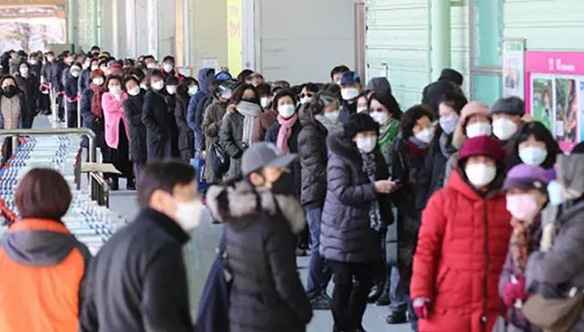

防疫不积极涉嫌“杀人”，韩国“新天地”会长跪地谢罪
原文链接 备份链接 图片来源：中央日报 记者：肖恩 “ “尽人事听天命，上天会眷顾。” ” “新天地方面对此感到无比愧疚，感谢政府倾力抗击疫情，并请求政府予以宽恕。新天地将积极配合政府并提供力所能及的人力物力援助。” 距离韩国“新天地”大 …

图片来源：Yonhap
“
新天地教会周四已再次致歉，对于教会内出现多例确诊病例深感愧疚。
”
韩国疾病管理本部3月5日通报，当天0时至下午4时，韩国新增322例新冠病毒感染病例，累计确诊6088例，死亡增至40例，治愈88例。这是韩国出现首例感染患者45天来病例数首次突破6000。
据韩国外交部5日消息，截至当天下午3时，因新冠肺炎疫情对韩国采取入境管制措施的国家和地区已增至98个。
在截至当天零时确诊的5766例病例中，分别有4327例和861例出现在大邱和庆尚北道，占比75%和14.9%。两地平均每10万人中有177.6人和32.3人确诊，其余地区则为0.3至4.1人，韩国全境为11.1人。
在大邱和庆北以外，韩国确诊病例数较高的地区还有京畿道110例、首尔市103例、釜山市92例、忠清南道86例以及庆尚南道74例。
截至5日零时，在韩国5766例累计确诊病例中，有69.4%与集体感染有关。与新天地教会相关的确诊病例共有3452人，占比59.9%，其中大部分来自大邱（3013人）和庆北（348人）。
据韩联社报道，中央灾难安全对策本部第一总括协调官金刚立5日表示，对大邱地区新天地信徒中有症状人员的检测工作收官，现在在对无症状信徒和其他市民进行检测，可以预测确诊人数将逐渐减少。

韩国单日（前一天0时至当天0时）新增确诊病例数已连续4天下降。来源：韩国中央防疫对策本部
金刚立表示，各地的确诊病例虽在增加，但除了大邱以及5日被指定为特别管控区的庆尚北道庆山市之外，没有集中出现确诊病例的地区。但他也谨慎地表示，能否保持这种趋势还需观察几天。
韩国疾病管理本部5日也表示，庆北东北部已再次出现集体感染事件，在奉化郡一家疗养院的112名患者和职员中，已有36人确诊感染。
韩国政府在2月掌握大邱地区9300多名新天地信徒名单后，已先对有症状人员进行了检测，截至3月2日，5000多名有症状人员中有2300多人确诊。
据韩联社报道，政府已自5日上午11时起，对新天地教会总部展开行政调查。首尔方面3日也表示，市政府认定新天地法人“损害公益”，决定吊销新天地法人执照，并将于下周召开听证会。
身处风口浪尖的新天地教会则在当天向抗击新冠肺炎疫情的募捐机构“社会福利共同募捐会”捐款了120亿韩元（约合人民币7025万元），大邱分会和中央会分别出资100亿和20亿韩元。
“社会福利共同募捐会”相关人士表示，并未得到新天地方面的提前通知，通过媒体报道才得知捐款消息。该人士透露，捐款金额较大时，双方通常会提前协商用途，但新天地没有走这道程序，而是直接通过募捐会的公开募捐账户完成了捐款。募捐会方面正就这笔款项的使用方向进行内部讨论，也将与新天地方面协商。
新天地教会当天已再次致歉，对于教会内出现多例确诊病例深感愧疚，表示将全力组织人力物力提供支援，期待疫情早日平息，愿患者早日康复。
未经授权 禁止转载

原文链接 备份链接 图片来源：中央日报 记者：肖恩 “ “尽人事听天命，上天会眷顾。” ” “新天地方面对此感到无比愧疚，感谢政府倾力抗击疫情，并请求政府予以宽恕。新天地将积极配合政府并提供力所能及的人力物力援助。” 距离韩国“新天地”大 …
原文链接 备份链接 图片来源：Yonhap “ 截至目前，除确诊患者外，韩国接受病毒检测的人数累计93459人，有61037人的检测结果呈阴性，其余32422人的结果还未出炉。 ” 韩国中央防疫对策本部3月1日通报，截至当天上午9时，韩国 …
原文链接 备份链接 图片来源：Kyotonews “ 韩国新天地受害者团体宣布将以违反《传染病预防法》和《特定经济犯罪加重处罚法》对新天地总会长李万熙提起指控。 ” 韩国中央防疫对策本部2月29日通报称，截至当天下午4时，韩国较当天上午9 …
原文链接 备份链接 图片来源：Yonhap “ 《东亚日报》指出，截至27日上午，加上民间医疗机构，韩国总共仅有1077张负压病床，已远少于确诊病例人数。 ” 韩国中央防疫对策本部2月28日通报，截至当天上午9时，韩国较昨日新增256例新 …
原文链接 备份链接 韩国已经过了政府防疫部门能独立控制疫情的阶段，现在已经进入整个社会都要配合防疫的关键时期。根据相关部门的推演，3月3日之前将是韩国是否能有效控制疫情的时间窗口 2月23日，在韩国大邱，工作人员在一家市场内进行消毒工作。 …